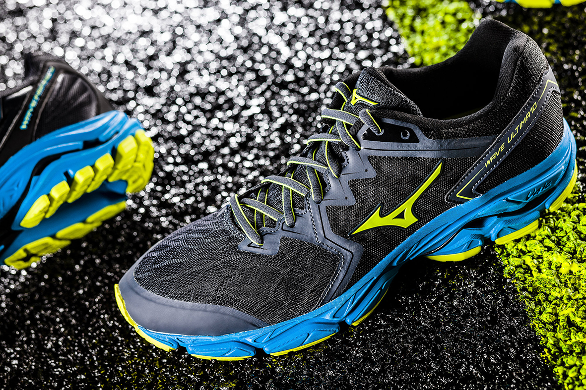
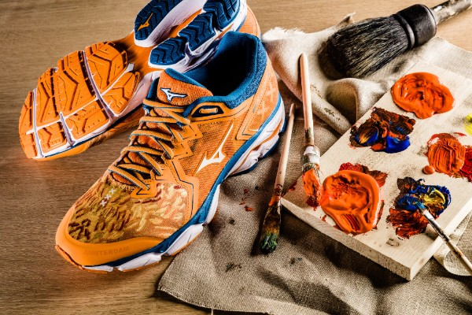
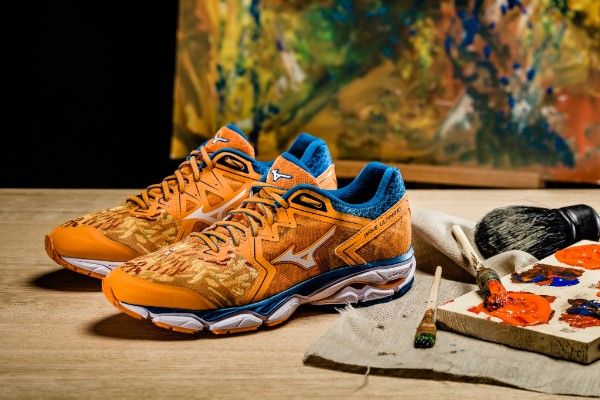

Nieuw bij Ren: Mizuno Wave Ultima 10
Wave Ultima 10
De Wave Ultima 10 is ontworpen voor de meest soepele hardloopervaring. Het is een veelzijdige en comfortabele hardloopschoen voor diverse soorten neutrale lopers.
Wave Ultima 10 TCS Amsterdam Marathon 2018 editie
Mizuno brengt de kunst van het hardlopen in beeld in het bijzondere design van deze TCS Amsterdam Marathon 2018 schoen. De typische stijl van Hollandse Meesters is toegepast op de Mizuno Wave Ultima 10. Deze neutrale schoen bezorgt je een comfortabele en soepele hardloopervaring. De kenmerkende Wave technologie van het Japanse merk zorgt voor een hoog niveau van demping en reactief vermogen. De harmonieuze pasvorm heeft een mesh met subtiele Amsterdam Marathon verwijzingen zoals de drie typerende Amsterdamse kruizen en de verwijzing naar de heilige marathon afstand; 42,195 km.
  Contacteer ons!